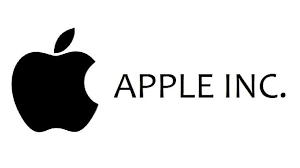
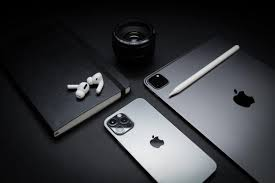
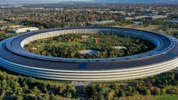
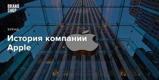
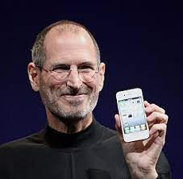
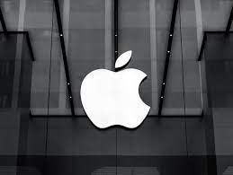

Apple Inc.
Вступ
Apple Inc. (колишня Apple Computer, Inc.) — американська технологічна компанія з офісом у Купертіно (Каліфорнія), яка проєктує та розробляє побутову електроніку, програмне забезпечення й онлайн-сервіси. Є першою американською компанією, чия капіталізація перевершила 1 трлн доларів США. Це сталося під час торгів акціями компанії 2 серпня 2018 року. Цього дня компанія також стала найдорожчою публічною компанією за всю історію, обійшовши капіталізацію попереднього рекордсмена — компанії PetroChina (1,005 трлн доларів у листопаді 2007 року).
У середині серпня 2020 року капіталізація Apple виросла до 2 трлн дол. 3 вересня 2020 року ціна компанії різко впала — на 8 % (180 млрд), що стало рекордом для фондового ринку, але все одна вартість була більшою за 2 трлн дол.
Про компанію
До пристроїв, що розробляються компанією належать смартфон iPhone, планшет iPad, персональний комп'ютер Mac,
портативний медіа-плеєр iPod і розумний годинник Apple Watch. Розроблене компанією програмне забезпечення
включає операційні системи macOS та iOS, медіа-плеєр iTunes, веббраузер Safari та застосунки iLife та iWork.
До онлайн сервісів належать iTunes Store, iOS App Store, Mac App Store та iCloud.
Apple була заснована Стівом
Джобсом , Стівом Возняком та Рональдом Вейном 1 квітня 1976 з метою розробки та
продажу персональних комп'ютерів. Її було зареєстровано як Apple Computer, Inc. 3 січня 1977 і було
перейменовано на Apple Inc. 9 січня 2007 р., щоб відобразити зміну її пріоритетів у бік побутової
електроніки.
Apple було включено до індексу Dow Jones Industrial Average 19 березня 2015.

Apple — це найбільша у світі компанія в області інформаційних технологій за виручкою, найбільша у світі технологічна компанія за обсягом активів і третій найбільший у світі виробник мобільних телефонів. 25 листопада 2014, на додаток до того, що вона найбільша публічна корпорація у світі за капіталізацією ринку, Apple стала першою компанією у Штатах, вартість якої перевищила 700 мільярдів $ США. Компанія наймає 115 000 працівників на постійній основі станом на липень 2015 і має 453 магазини роздрібної торгівлі у шістнадцяти країнах на березень 2015 року. ITunes Store — найбільший у світі музичний магазин.
Річна виручка компанії за 2017 рік склала 229,2 млрд $, чистий прибуток — 48,4 млрд $, у 2015—233 млрд $. Більшу частину прибутку принесли продажі iPhone — 55 %, їх продали за рік більше 200 млн шт.
У 2019 році компанія зосередилася на сервісах, так як смартфони принесли їй менше половини прибутку.
У серпні 2021 року вартість компанії зросла до 2,48 трлн дол., компанія залишається найдорожчою компанією у світі.
3 січня 2022 року Apple стала першою компанією у світі, що досягла ринкової капіталізації у 3 трильйони доларів. Це сталося, коли акції на торгах подорожчали на 2,91%, до 182,74 долара за один папір.
Назва компанії
Назва фірми походить від англ. apple яблуко, зображення яблука використано в логотипі. Логотип розробив
відомий американський дизайнер Роб Яноф.
Один із засновників Стівен Возняк пропонував назвати компанію «Banana»
До 9 січня 2007 року офіційною назвою корпорації протягом ще 30 років була «Apple Computer». Відмова від
слова «Computer» у назві демонструє зміну основного фокусу корпорації з традиційного для неї ринку
комп'ютерної техніки на ринок побутової електроніки.
Власники
Apple — публічна компанія, її акції торгуються на біржі NASDAQ та Лондонській фондовій біржі.
Історія
1976—1980: перші роки
Apple заснована в Каліфорнії 1 квітня 1976 року Стівом Джобсом, Стівом Возняком та Рональдом Вейном, які
зібрали в середині 1970-х свій перший персональний комп'ютер на базі процесора MOS Technology 6502 — Apple
I. Продаж розпочався в липні 1976 року за ціною 666,66 $ (за сьогоднішнім курсом приблизно $2,5 тис.).
«Apple I» був не першим комп'ютером, який програмувався. Право першості належало комп'ютеру Altair 8800,
який був створений аматором і розповсюджувався через каталоги у 1974 році. Однак, Альтаїр не був технічно
кваліфікований як «персональний комп'ютер», оскільки не давав можливості накопичувати та викликати дані за
допомогою програм користувача.
Стів Джобс
Наприкінці 1970-х та на початку 1980-х років Apple II, випущений 16 квітня 1977, був найпоширенішим у світі
персональним комп'ютером того часу. Він мав кольорову графіку та відкриту архітектуру, як пристрій
зберігання використовувались не касети з магнітними стрічками, а магнітні диски. Було продано більше 5 млн
комп'ютерів «Apple II».

Наприкінці 70-х Apple вже мала штат комп'ютерних проектувальників. У травні 1980 компанія випустила Apple
III, намагаючись конкурувати з IBM та Microsoft.
1981—1985: Lisa та Macintosh
Перший Macintosh, представлений у 1984 році
Над Apple Lisa Стів Джобс почав працювати ще в 1978, але був виключений із колективу через боротьбу й
прийняв дешевий комп'ютерний проект Джефа Рескіна, Macintosh. У 1983 гонку виграла Lisa, але через високу
ціну її виробництво зупинилося.
Після цього, в 1984 році, фірма Apple вперше представила новий 32-розрядний комп'ютер Macintosh, перший
комерційно успішний персональний комп'ютер, що базувався на графічному інтерфейсі та використовував мишу
замість інтерфейсу командного рядка. Спочатку Макінтош мав успіхи у збуті, але наступні продажі вже не були
такими сильними. Причина цьому — знову ж висока ціна. Доля комп'ютера змінилася після впровадження
LaserWriter, першого лазерного принтера, та PageMaker, раннього пакета настільної видавницької системи.
Основною перевагою Мас був революційний на цей час графічний інтерфейс.
В березні 1981 року Возняк потрапив у авіакатастрофу і тимчасово відсторонився від роботи. Проблеми з
продажем «Apple III» призвели до того, що Джобсу довелось звільнити 40 співробітників. В пресі ходили чутки
про близький кінець компанії «Apple».
На початку 1983 року Джобс, через власну нездатність впоратись із проблемами, запросив на посаду головного
виконавчого директора компанії Джона Скаллі, який у той час обіймав аналогічну посаду в PepsiCo. В квітні
1983 року Скаллі розпочав роботу на новій посаді. Стів Джобс переживав провали компанії як власні, тому між
ним та Скаллі виникали непорозуміння.
В 1985 році президент США Рональд Рейган нагородив Джобса та Возняка медалями за розвиток технічного
прогресу.
Діяльність Apple в Україні
30 червня 2021 року Apple офіційно відкрила офіс в Україні, у компанії також з’явилася підтримка українською
мовою. З цього моменту Apple планує самостійно ввозити техніку в Україну та контролювати магазини офіційних
дилерів, які надають послуги компанії в Україні.

28.02.19 перші акції Apple в Україні які для обігу ініціював Національний депозитарій України.
12.03.19 НКЦПФР приймає рішення щодо допуску акцій корпорації APPLE INC. (код ISIN — US0378331005) до
обігу на території України.
29.07.19 Акції Apple (AAPL-код на Українській біржі) були включені в Біржовий список.
30.07.19 В прес-центрі інформаційного агентства «Інтерфакс-Україна» пройшла офіційна прес-конференція за
темою «Акції Apple Inc. на „Українській біржі“», на якій і пройшла перша угода що до продажу акцій Apple
Inc. Її уклали між собою ТОВ «БТС БРОКЕР» та ТОВ «КУА ЕЛ. ДІ. АССЕТ МЕНЕДЖМЕНТ», було придбано 95 акцій.
Солідне звання акціонера технологічного гіганта Apple, з того часу, може отримати кожен українець.
У 2021 році в додатку Apple Music for Artists знайшли карту України без Криму, а півострів зображується як
частина Росії. Пес-секретар Міністерства закордонних справ України Олег НіколенкоМ повідомив, що іністерство
закордонних справ доручило посольству України в США звернутися до компанії Apple щодо ситуації. Пізніше
компанія виправила помилку.
У листопаді 2021 року в Україну вперше приїжджає топ-менеджмент Apple. Приводом є презентація проектів,
напрацьованих спільно з Міністерством цифрової трансформації України. Очікується, що перепис населення в
Україні в 2023 року буде проведено за прикладом США, де Apple під час перепису населення надавала більшу
частину техніки в оренду на кілька тижнів.
У січні 2022 Apple підвищили ціни на додатки в українському сегменті App Store та вартість внутрішньоігрових
покупок.